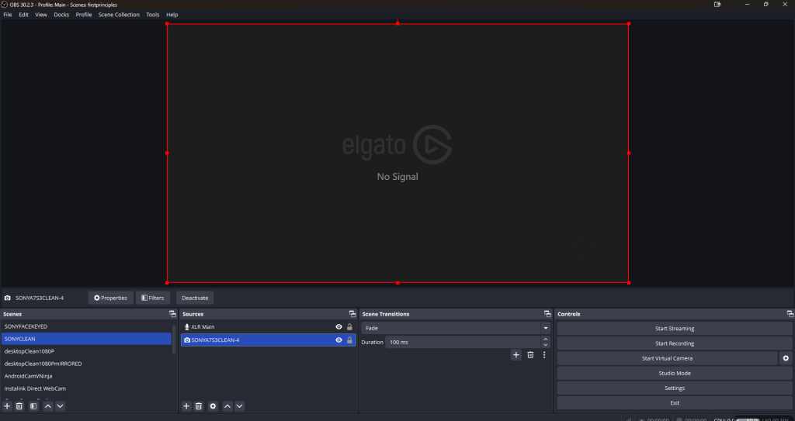
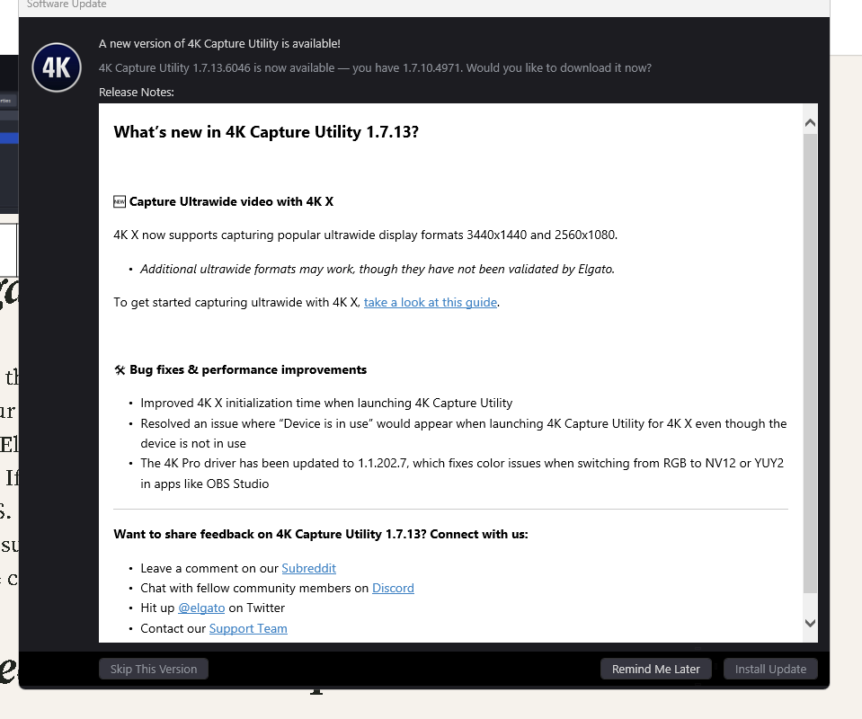
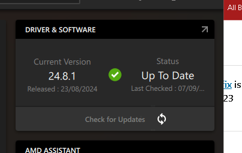
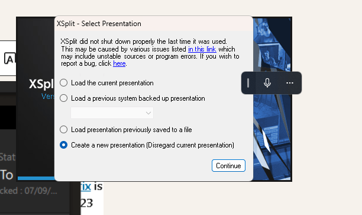
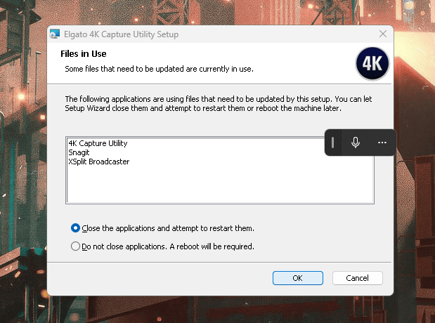

Obs not picking up the Camera fix
If OBS is not picking up your camera through the Elgato 4K capture card, there are several steps you can take to troubleshoot and resolve the issue:
1. Check Cable Connections:
-
Ensure that all cables (HDMI, USB, etc.) are securely connected.
-
Try swapping the HDMI cable with another one to rule out a faulty cable.
Move from port 3 to 4
Cable direct one

2. Elgato 4K Capture Card Setup:
-
Verify that your Elgato capture card is properly set up and detected by your computer.
-
Open Elgato's 4K Capture Utility to see if the camera feed is visible there. If it works in the 4K Capture Utility, the issue is likely related to OBS.
-
Make sure you’re using the correct HDMI input on the capture card (some cards have multiple inputs).
Update install > choco upgrade all

3. Check Camera Output:
-
Make sure your camera is set to output video at a resolution supported by the Elgato 4K capture card (usually 1080p or 4K).
-
If your camera has multiple output modes (such as 1080p, 720p), try switching between them to see if OBS can pick up the signal.
did not change them
4. Update Drivers and Firmware:
-
Ensure that both OBS and Elgato drivers are fully up to date.
-
Check for any firmware updates for your Elgato 4K card on the Elgato website.
gpu

5. Add the Capture Card in OBS:
-
Go to Sources in OBS and add a new Video Capture Device.
-
Select the Elgato 4K capture card from the drop-down menu.
-
Try adjusting the resolution and frame rate settings within OBS. For some setups, choosing a specific resolution (e.g., 1920x1080) works better than leaving it on default.
xsplit

6. Deactivate Other Programs:
-
If the Elgato 4K Capture Utility is running, close it before using OBS as only one program can access the capture card at a time.
-
Similarly, check if any other programs might be interfering with OBS by accessing the camera.
maybe these >

7. Check USB Bandwidth:
-
If you have multiple USB devices connected, try disconnecting any unnecessary devices to free up bandwidth.
-
Make sure the capture card is plugged into a USB 3.0 port (for 4K).
8. OBS Settings Adjustments:
-
Go to Settings in OBS and then navigate to Video and check your canvas and output resolution settings.
-
Under Advanced settings, ensure that the renderer is set to Direct3D 11 (on Windows).
9. Test on Another Device:
- If possible, try connecting the Elgato 4K capture card to another computer to verify that the hardware is functioning correctly.
webcams are working
Let me know how these steps work for you or if you need further assistance!
Imported from rifaterdemsahin.com · 2024